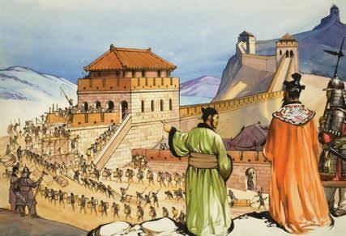
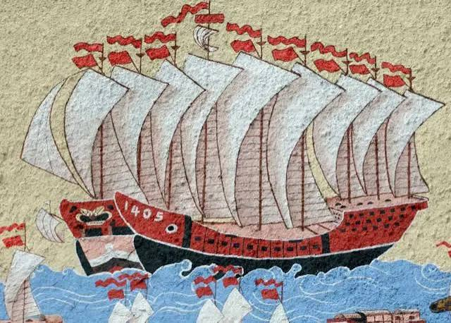

A Evolução Histórica do Comércio Chinês: Da Seda à Era Digital
A China não se tornou a "Fábrica do Mundo" por acaso. A trajetória comercial do país é uma das mais ricas da história humana. Ela conecta caravanas antigas que cruzavam desertos a contêineres automáticos e gigantes do e-commerce global. Descubra como uma economia isolada se transformou na maior potência comercial do planeta.
A Antiguidade e a Rota da Seda (Séc. II a.C. – Séc. XIV)
- O início: O comércio internacional chinês ganhou força na Dinastia Han com a abertura de rotas terrestres e marítimas que conectavam o Extremo Oriente à Europa e à África.
-
Produtos de luxo:
A China detinha o monopólio e o segredo de fabricação de
mercadorias cobiçadas mundialmente.
- Seda: Tecido leve e valioso que servia até como moeda de troca.
- Porcelana: Conhecida no Ocidente simplesmente como "china".
- Chá: Erva medicinal que se transformou em hábito cultural global.

Isolamento e as Guerras do Ópio (Séc. XVIII – XIX)
- Sistema de Cantão: Durante séculos, a China restringiu o comércio com europeus a poucos portos controlados. O país vendia muito, mas comprava quase nada do Ocidente.
- O conflito: Para reverter o déficit comercial, os britânicos passaram a contrabandear ópio para a China.
- Abertura forçada: A destruição das cargas de ópio pelo governo chinês resultou nas Guerras do Ópio. Derrotada, a China foi forçada a assinar tratados desiguais e a ceder territórios (como Hong Kong), abrindo seus portos à força para o capitalismo ocidental.
A Era Mao Tsé-Tung (1949 – 1976)
- Fechamento de mercado: Com a criação da República Popular da China, o país adotou um modelo socialista de economia planejada e estatizada.
- Foco interno: O comércio exterior foi drasticamente reduzido. As trocas comerciais limitavam-se, em grande parte, ao bloco soviético, focando na autossuficiência agrícola e industrial básica.
A Grande Virada: Reforma e Abertura (1978)
- Deng Xiaoping: O novo líder iniciou reformas de mercado sob o lema "Socialismo com características chinesas".
- ZEEs (Zonas Econômicas Especiais): Cidades litorâneas (como Shenzhen) receberam incentivos fiscais para atrair empresas estrangeiras, tecnologia e investimentos. A China passou a produzir bens de consumo baratos para exportação em massa.

A "Fábrica do Mundo" e a Nova Rota da Seda (2001 – Presente)
- Entrada na OMC (2001): A China ingressou na Organização Mundial do Comércio, consolidando-se como o polo industrial global.
- Crescimento tecnológico: O país deixou de produzir apenas itens baratos para liderar setores de alta tecnologia, como painéis solares, carros elétricos (VEs), smartphones e redes 5G.
- A Nova Rota da Seda (Belt and Road Initiative): Um megaprojeto bilionário de infraestrutura global focado em portos, ferrovias e rodovias para conectar a China a mais de 140 países.